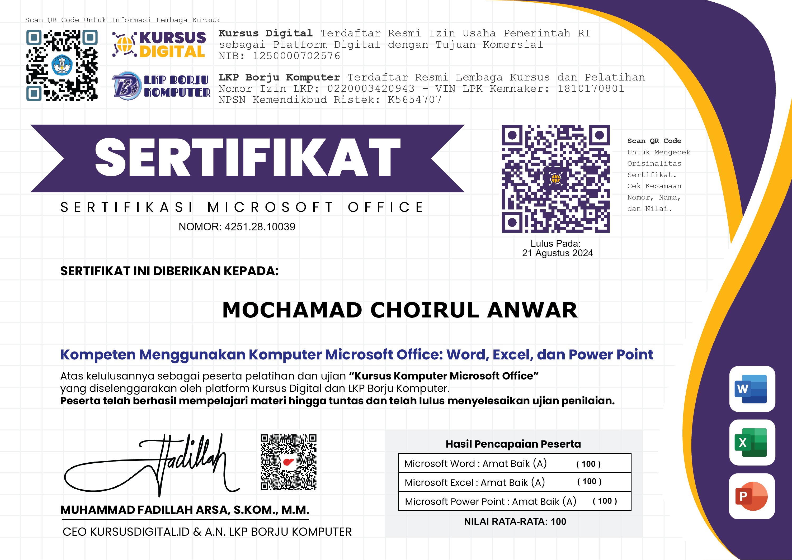

My Certificate




seorang Data Analyst, Programmer, dan AI Specialist
Saya
Memiliki Pengalaman Yang Didapat
Dari Personal Project dan
Magang.
saya berfokus pada pengembangan solusi berbasis data
dan kecerdasan buatan. Berbekal keahlian dalam
analisis
data, pemrograman, dan pengembangan model AI,
aya berkomitmen
membantu organisasi maupun individu
dalam mengambil keputusan
yang lebih tepat dan efisien
melalui teknologi.

Saya adalah seorang Data Analyst, Programmer, dan AI Specialist yang
memiliki ketertarikan dalam mengolah data menjadi insight yang
bernilai serta mengembangkan solusi berbasis kecerdasan buatan.
Sejak menempuh pendidikan hingga saat ini, saya aktif mengasah
kemampuan melalui berbagai project personal, kolaborasi tim, serta
workshop yang berfokus pada data analytics, web development, dan
machine learning.
Saya menguasai beberapa bahasa pemrograman seperti Python, R,
dan JavaScript, serta terbiasa bekerja dengan tools seperti Power BI,
Tableau, dan TensorFlow.
Selain bidang analitik dan AI, saya juga memiliki minat di
bidang UI/UX Design dan Front-End Development, karena saya percaya
bahwa visualisasi yang baik dapat memperkuat makna data.
Menggunakan algoritma Decision Tree C5.0 untuk menganalisis faktor-faktor yang mempengaruhi keterlambatan penyelesaian tugas akhir mahasiswa.
Tools: R, RStudio, ggplot2, C5.0Membangun sistem untuk melakukan posting otomatis dengan facebook API dari Graph API mempermudah dalam proses posting di beberapa akun instagram dengan lebih efisien
Tools: Python, Json, MatplotlibMembuat model menggunakan bahasa Python untuk memberikan rekomendasi mesin yang layak untuk diberikan sertifikasi kelayakan mesin dengan metode Fuzzy Tsukamoto dan integrasi API.
Tools: Python, Pandas, Matplotlib, Numpy, SpreadsheetMendesain dan mengimplementasikan dashboard interaktif untuk menampilkan Hasil Penjualan Mobil Toyota dalam 5 tahun terakhir, dengan visualisasi yang informatif menggunakan Google Looker.
Tools: Google Looker, Excel, CSVMendesain Dan Membuat Dashboard yang informatif menggunakan Google Lookerserta melakukan pemilihan atau seleksi data yang digunakan menggunakan SQL
Tools: SQL, Google Looker, CSV, Spreadsheet, ExcelMenyusun dashboard interaktif untuk data persertifikasian tanah di seluruh Indonesia tahun 2024 dengan Google Looker Serta melakukan intergrasi data excel agar dashboard bisa berjalan secara realtime menggunakan AppScript
Tools: Google Looker, Google AppScript, Spreadsheet, CSVMendesain dan Membuat Simple Web dengan menggunakan HTML, CSS, dan JS Serta melakukan intergrasi dengan Google Form untuk memepermudah pencatatan dan rekap Pasien dan kebutuhan lain
Tools: HTML,CSS, JavaScript, Google Form, Google AppScript
“Pekerjaan-pekerjaan kecil yang selesai dilakukan lebih baik daripada rencana-rencana besar yang hanya didiskusikan.”
- Peter Marshall -
Developed By Mochamad Choirul Anwar © 2024